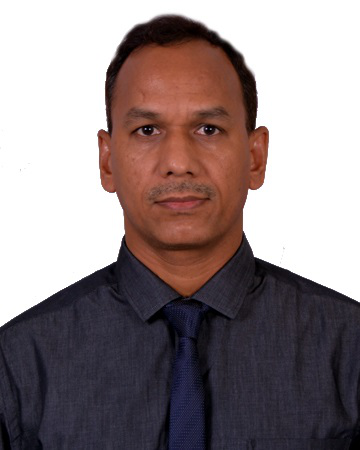

About Me

Professional Vision:
Offer solutions for the built environment that support sustainability and that
are delightful to the stakeholders.
Key Competence:
-
Civil Engineer and Construction Quality Management Expert with 31 + years of
diversified experience at Senior Management level at projects as well as the
corporates in core construction as well as consultancy roles,
-
Nature of works include Detailed Design and Procurement for Mumbai -
Ahmedabad High Speed Rail Project, Western Dedicated Freight Corridors
Phase-2 (Project Management Consultancy), and core construction projects in
various Metros/ National Highways/ important bridges/ Hydro and Thermal
Power/ Marine sectors,
-
Familiarity of pan-India and overseas conditions, and systems of reputed
national and international companies, under FIDIC, BOT, World Bank, JICA and
ADB environment,
Go Back to Main Page